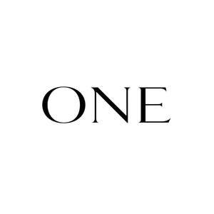

Trade Mark Journal No.2026/005 30 January 2026
UK00004321830 9 January 2026 (14,35)

- Class 14
- Jewellery; Enamelled jewellery; Jewellery, including imitation jewellery and plastic jewellery; Cloisonné jewellery; Brooches [jewellery]; Jewellery brooches; Jewellery chain; Jewellery stones; Gold jewellery; Agate as jewellery; Pearls [jewellery]; Jade [jewellery]; Pewter jewellery; Pendants [jewellery]; Clasps for jewellery; Diamond jewelry; Rings being jewellery; Rings [jewellery]; Cloisonne jewellery; Charms [jewellery]; Charms for jewellery; Jewellery charms; Cloisonné jewellery [jewelry (Am.)]; Fashion jewellery; Lockets [jewellery]; Jewellery incorporating diamonds; Brooches [jewellery, jewelry (Am.)]; Jewellery in semi-precious metals; Ornaments [jewellery]; Pearls [jewellery, jewelry (Am.)]; Jewellery chains; Chains [jewellery]; Necklaces [jewellery]; Sterling silver jewellery; Jewelry; Imitation jewellery; Trinkets [jewellery]; Bracelets [jewellery]; Jewellery fashioned of semi-precious stones; Shoe jewellery; Amulets being jewellery; Amulets [jewellery]; Ring bands [jewellery]; Rings [jewellery, jewelry (Am.)]; Decorative brooches [jewellery]; Chains [jewellery, jewelry (Am.)]; Charms [jewellery, jewelry (Am.)]; Hat jewellery; Gold plated brooches [jewellery]; Medallions [jewellery, jewelry (Am.)]; Jewellery in non-precious metals; Brooches [jewelry]; Jewelry brooches; Brooches being jewelry; Jewellery fashioned from non-precious metals; Costume jewellery; Jewellery fashioned from bronze; Lockets [jewellery, jewelry (Am.)]; Trinkets [jewellery, jewelry (Am.)]; Ornaments [jewellery, jewelry (Am.)]; Amberoid pendants being jewellery; Precious jewellery; Ivory jewellery; Cabochons for making jewellery; Amulets [jewellery, jewelry (Am.)]; Fake jewellery; Ivory [jewellery, jewelry (Am.)]; Jewellery made from gold; Bracelets [jewellery, jewelry (Am.)]; Amber pendants being jewellery; Synthetic stones [jewellery]; Necklaces [jewellery, jewelry (Am.)]; Jewellery made from silver; Imitation jewellery ornaments; Paste jewellery; Jewellery (Paste -); Jewellery made of glass; Cloisonné jewelry; Jewellery chain of precious metal for necklaces; Rings [jewellery] made of non-precious metal; Pins [jewellery]; Pins being jewellery; Jewellry; Gold thread [jewellery, jewelry (Am.)]; Pins [jewellery, jewelry (Am.)]; Pearls [jewelry]; Crucifixes as jewellery; Wristlets [jewellery]; Jewellery fashioned of cultured pearls; Jewellery caskets; Jewellery chain of precious metal for bracelets; Silver thread [jewellery, jewelry (Am.)]; Jewellery incorporating pearls; Clasps for jewelry; Items of jewellery; Jewellery items; Jewelry stickpins; Jewellery chain of precious metal for anklets; Jewellery made of non-precious metal; Paste jewellery [costume jewelry (Am.)]; Paste jewellery [costume jewelry [Am.]]; Pendants [jewelry]; Jewellery made of bronze; Wire of precious metal [jewellery, jewelry (Am.)]; Jewellery fashioned of precious metals; Collets being parts of jewellery; Jewellery for personal adornment; Platinum jewelry; Gold thread [jewellery]; Jewellery in precious metals; Jewellery of precious metals; Plastic costume jewellery; Clips of silver [jewellery]; Crosses [jewellery]; Rings [jewelry]; Jewellery findings; Silver thread [jewellery]; Jewelry (Paste -) [costume jewelry]; Paste jewelry [costume jewelry]; Rings [jewellery] made of precious metal; Body jewellery; Jewellery made of crystal; Charms [jewelry]; Jewelry charms; Charms for jewelry; Jewellery in the form of beads; Artificial jewellery; Beads for making jewellery; Personal jewellery; Precious jewels; Precious metals; Precious gemstones; Precious stones; Figurines of precious or semi precious stones; Precious and semi-precious gems; Statues of precious metals; Trophies of precious metals; Cuff links made of precious metals with precious stones; Precious and semi-precious stones; Threads of precious metals; Cases of precious metals for jewels; Ingots of precious metals; Busts of precious metals; Unwrought precious stones; Semi-worked precious metals; Key charms of precious metals; Insignia of precious metals; Chains of precious metals; Earrings of precious metal; Fancy keyrings of precious metals; Personal ornaments of precious metal; Watches made of precious metals; Jewellery made of precious metals; Imitation precious stones; Trophies made of precious metals; Figurines of precious stones; Prize cups of precious metals; Necklaces of precious metal; Spinel [precious stones]; Bracelets of precious metal; Statuettes of precious metal; Figurines of precious metal; Medals made of precious metals; Synthetic precious stones; Precious metal trophies; Statues of precious metal; Jewelry boxes of precious metals; Jewellery boxes of precious metals; Small jewellery boxes of precious metals; Alloys of precious metals; Precious metals and their alloys; Medallions made of precious metals; Key rings of precious metals; Ingots of precious metal; Boxes of precious metal; Precious metals, unwrought or semi-wrought; Threads of precious metal; Key holders of precious metals; Jewellery being articles of precious metals; Tie-pins of precious metal; Jewellery coated with precious metals; Rings of precious metal; Cases of precious metals for watches; Jewel cases of precious metal; Busts of precious metal; Jewellery plated with precious metals; Jewellery made of precious stones; Badges of precious metal; Trophies coated with precious metals; Jewellery being articles of precious stones; Articles of jewellery with precious stones; Jewellery incorporating precious stones; Medals coated with precious metals; Key fobs of precious metals; Sculptures of precious metal; Cases of precious metals for clocks; Objet d'art made of precious metals; Artificial stones [precious or semi-precious]; Key charms coated with precious metals; Articles of jewellery made of precious metals; Alloys of precious metal; Precious metal alloys; Figures of precious metal; Threads of precious metal [jewelry]; Threads of precious metal [jewellery]; Insignias of precious metal; Crucifixes of precious metal, other than jewelry; Crucifixes of precious metal, other than jewellery; Jewellery caskets of precious metal; Jewelry cases of precious metal; Rings coated with precious metals; Jewellery cases of precious metal; Trinkets coated with precious metal; Jewellery boxes of precious metal; Jewelry caskets of precious metal; Gold; Gold bullion; Gold coins; Gold ingots; Gold medals; Gold bullion coins; Gold earrings; Silver; Gold bracelets; Gold necklaces; Gold rings; Silver bullion; Gold alloys; Gold chains; Gold plated bracelets; Gold plated earrings; Gold plated chains; Imitation gold; Silver ingots; Gold alloy ingots; Gold plated rings; Gold thread jewelry; Gold thread [jewelry]; Jewellery containing gold; Gold base alloys; Gold and its alloys; Silver earrings; Silver bracelets; Gold, unwrought or beaten; Silver rings; Spun silver [silver wire]; Watches made of plated gold; Unwrought silver; Silver necklaces; Silver alloy ingots; Platinum ingots; Square gold chain; Silver thread [jewelry]; Watches made of gold; Figurines made from gold; Silver alloys; Objet d'art of enamelled gold; Silver thread; Silver watches; Platinum alloy ingots; Platinum [metal]; Platinum; Unwrought silver alloys; Gold, unworked or semi-worked; Figurines made of imitation gold; Silver, unwrought or beaten; Silver and its alloys; Horological instruments made of gold; Platinum rings; Jewellery made of plated precious metals; Cuff links made of gold; Watches made of rolled gold; Figurines made from silver; Trinkets of bronze; Copper tokens; Tokens (Copper -); Objet d'art of enamelled silver; Cuff links made of imitation gold; Platinum watches; Lapel pins of precious metals [jewellery]; Platinum alloys; Jewellery of yellow amber; Jewellery made of crystal coated with precious metals; Silver objets d'art; Jewelry of yellow amber; Jewellery coated with precious metal alloys; Chain mesh of precious metals [jewellery]; Wire of precious metal [jewellery]; Choker necklaces; Necklace charms; Necklaces; Necklaces [jewelry]; Earrings; Silver-plated necklaces; Bracelets [jewelry]; Jewellery rope chain for necklaces; Bracelet charms; Silver-plated earrings; Bangle bracelets; Bib necklaces; Gold-plated necklaces; Jewelry clips for adapting pierced earrings to clip-on earrings; Jewellery rope chain for bracelets; Bead bracelets; Jewel pendants; Scarf clips being jewelry; Pendants; Gold-plated earrings; Clip earrings; Silver-plated bracelets; Lockets [jewelry]; Jewellery rope chain for anklets; Identification bracelets [jewelry]; Hoop earrings; Bracelets; Pendant watches; Pierced earrings; Amulets [jewelry]; Hat jewelry; Wooden bead bracelets; Bangles; Costume jewelry; Jewelry chains; Chains [jewelry]; Bracelets made of embroidered textile [jewelry]; Identification bracelets of precious metal [jewelry]; Drop earrings; Beads for making jewelry; Closures for necklaces; Bracelets made of embroidered textile [jewellery]; Pendants for watch chains; Plastic bracelets in the nature of jewelry; Jewelry hat pins; Rhinestones for making jewelry; Trinkets [jewelry]; Dress ornaments in the nature of jewellery; Cabochons for making jewelry; Shoe jewelry; Ivory jewelry; Crucifixes as jewelry; Jewelry hatpins; Pins being jewelry; Diamonds; Diamond [unwrought]; Cut diamonds; Tanzanite being gemstones; Sapphires; Gemstones; Sapphire; Tourmaline gemstones; Emeralds; Topaz; Semi-precious gemstones; Emerald; Pearl; Artificial gem stones; Opals; Artificial gemstones; Natural gem stones; Ruby; Wire of precious metal [jewelry]; Jewel chains; Chain mesh of semi-precious metals; Jade; Jewels; Gemstones, pearls and precious metals, and imitations thereof; Signet rings; Engagement rings; Finger rings; Wedding rings; Rings [trinket]; Gold-plated rings; Silver-plated rings; LED finger ring watches; Eternity rings; Key rings [split rings with trinket or decorative fob]; Key rings; Friendship rings; Body-piercing rings; Charms for key rings; Ring holders of precious metal; Key rings of leather; Leather key rings; Retractable key rings; Key rings, not of metal; Decorative key rings; Key chains [split rings with trinket or decorative fob]; Split rings of precious metal for keys; Non-metal key rings; Key rings of precious metal; Dials (clockmaking and watchmaking); Chronographs for use as timepieces; Timepieces; Watchmaking pendulums; Pendulums [clock- and watchmaking]; Horological instruments; Dials [clock- and watchmaking]; Dials for clock- and watchmaking; Horological articles; Dials for horological articles; Barrels [clock- and watchmaking]; Cases for clock- and watchmaking; Anchors [clock- and watchmaking]; Horological products; Chronographs for use as watches; Chronographs as watches; Chronographs [watches]; Oscillators for timepieces; Dials for clock and watch-making; Clock hands [clock- and watchmaking]; Clockmaking pendulums; Horological instruments having quartz movements; Electrical timepieces; Wristwatches; Cases for clock and watch-making; Electronic timepieces; Cases for horological instruments; Chronometers; Parts and fittings for horological instruments; Electric timepieces; Faces for horological instruments; Clocks and watches; Watches and clocks; Mechanical watches; Quartz watches; Movements for clocks and watches; Movements for watches and clocks; Oscillators for watches; Quartz clocks; Timekeeping instruments; Cases of precious metals for horological articles; Housings for clocks and watches; Diving watches; Clocks and watches, electric; Watches; Cases [fitted] for horological articles; Presentation boxes for horological articles; Mechanical watch oscillators; Cases for watches and clocks; Presentation cases for horological articles; Mechanical watches with manual winding; Wrist watches; Dials for watches; Escapements; Clocks having quartz movements; Clocks and watches for pigeon-fanciers; Pendulum clocks; Sundials; Sports watches; Electronic watches; Wristwatches with pedometers; Chronometric instruments; Mechanical watches with automatic winding; Dials for clocks; Clocks incorporating ceramics; Clocks; Solar watches; Automobile clocks; Pendulums [clock and watch making]; Parts for clockworks; Time clocks [master clocks] for controlling other clocks; Master clocks; Oscillators for clocks; Chess clocks; Industrial clocks; Fittings for watches; Straps for wristwatches; Parts for watches; Timekeeping systems for sports; Watch winders; Digital clocks; Pocket watches; Bracelets for watches; Dials [clock and watch making]; Dials for clock and watch making; Wristwatches with GPS apparatus; Control clocks [master clocks]; Miniature clocks; Watches incorporating a telecommunication function; Digital watches with automatic timers; Electronic clocks; Alarm watches; Parts and fittings for chronometric instruments; Wristlet watches; Parts and fittings for watches; Electric watches; Watch cases [parts of watches]; Clock dials; Watch dials; Clock cases being parts of clocks; Parts for clocks; Watchbands; Cases for chronometric instruments; Chronometric apparatus and instruments; Watch and clock springs; Wrist straps for watches; Straps for wrist watches; Rope chain [jewellery] made of common metal; Flexible wire bands for wear as a bracelet; Articles of jewellery made from rope chain; Neck chains; Rope chain made of precious metal; Jewelry charms in precious metals or coated therewith; Jewelry guard chains; Fitted jewelry pouches; Ankle bracelets; Holiday ornaments [figurines] of precious metal, other than tree ornaments; Ear ornaments in the nature of jewellery; Tie chains of precious metal; Watch straps; Watch bracelets; Watch glasses; Watch movements; Watch hands; Watch fobs; Watch faces; Watch boxes; Watch crystals; Watch clasps; Watch bands; Watch parts; Watch crowns; Watch pouches; Watch casings; Watch chains; Chains (Watch -); Watch cases; Clock and watch hands; Watch and clock hands; Watch springs; Springs (Watch -); Wrist watch bands; Anchors [clock and watch making]; Watch boxes [presentation]; Barrels [clock and watch making]; Leather watch straps; Stop watches; Watch straps of plastic; Non-leather watch straps; Watch straps of nylon; Hands (Clock -) [clock and watch making]; Clock hands [clock and watch making]; Metal watch bands; Metal expanding watch bracelets; Watches for sporting use; Straps for watches; Dress watches; Watch straps of synthetic material; Watch straps of polyvinyl chloride; Table watches; Jewellery boxes and watch boxes; Watches for outdoor use; Bands for watches; Faces for watches; Presentation boxes for watches; Automatic watches; Cases for watches [presentation]; Watches for nurses; Watches containing a game function; Chains for watches; Women's watches; Cases for watches; Divers' watches; Watch straps made of metal or leather or plastic; Bracelets and watches combined; Cases adapted for holding watches; Wristwatches with pedometer feature; Watches bearing insignia; Electronically operated movements for watches; Watches incorporating a memory function; Cases [fitted] for watches; Electrically operated movements for watches; Dials for clock-and-watch-making; Watches containing an electronic game function; Clockworks; Clock movements; Cufflinks; Clock boxes; Clock cabinets; Clock mechanisms; Clock hands; Clock faces; Alarm clocks; Clock housings; Clock cases; Timing clocks; Desk clocks; Wall clocks; Control clocks; Electric alarm clocks; Electronic alarm clocks; Atomic clocks; Grandfather clocks; Table clocks; Hands for clocks; Faces for clocks; Cabinets for clocks; Digital clocks with automatic timers; Mantle clocks; Floor clocks; Stands for clocks; Clocks incorporating radios; Travel clocks; Small clocks; Digital clocks incorporating radios; Clocks for world time zones; Electronically operated movements for clocks; Electrically operated movements for clocks; Digital clocks being electronically controlled; Cases [fitted] for clocks; Clocks and parts therefor; Stopwatches; Dials (Sun -); Sun dials; Apparatus for sports timing [stopwatches]; Time instruments.
- Class 35
- Retail services in relation to jewellery; Retail services in relation to smartwatches; Retail services relating to jewelry; Online retail services relating to jewelry; Retail services in relation to time instruments; Wholesale services relating to jewelry; Wholesale services in relation to jewellery.
Jamal Al-Hussam